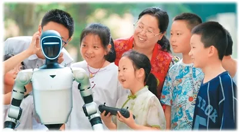

2026 年 5 月，中青报面向 1336 名家长做了一次调查。同一份问卷里，家长一边说"AI 帮孩子拓展了视野（62.6%）、激发了创造（59.8%）"，一边说"AI 让孩子心理依赖（58.8%）、思考能力下降（42.7%）"。机遇的最大值与风险的最大值，几乎贴在一起。
点击 左盘 逐项展开机遇 · 点击 右盘 逐项展开风险 · 横梁随展开重量实时倾斜
展开全部后，机遇总重 217.0% 与风险总重 214.1% 几乎打平——天平没有答案，教的人才有。口径：家长主观感受，各项可并列不可相加
Common Sense Media 2026 年 6 月那份报告把硬币翻了另一面：即便在最常使用 AI 陪伴的青少年里，80% 仍把真人友谊放在第一位；38% 的 AI 用户说，他们"把练到的社交技能用回了现实"。光不是没有，只是不会自己落下来。

图7：2026年8月10日，湖北巴东县信陵镇青年之家暑期爱心托管班，老师带孩子们与AI机器人互动（焦国斌 摄，人民视觉）
北京安定医院儿童精神医学首席专家郑毅的临床观察更深一层："AI 沉迷往往是'果'而不是'因'——先有焦虑、抑郁、社交困境，才有 AI 填补。"把 AI 拿走，伤口还在。这也是为什么"禁用"这一派政策在临床医生那里，从未获得过支持。
来源：中青报 2026-05-27 · Common Sense Media 2026-06 · 孙宏艳《人民教育》2026-10 · 郑毅 2026-08-29